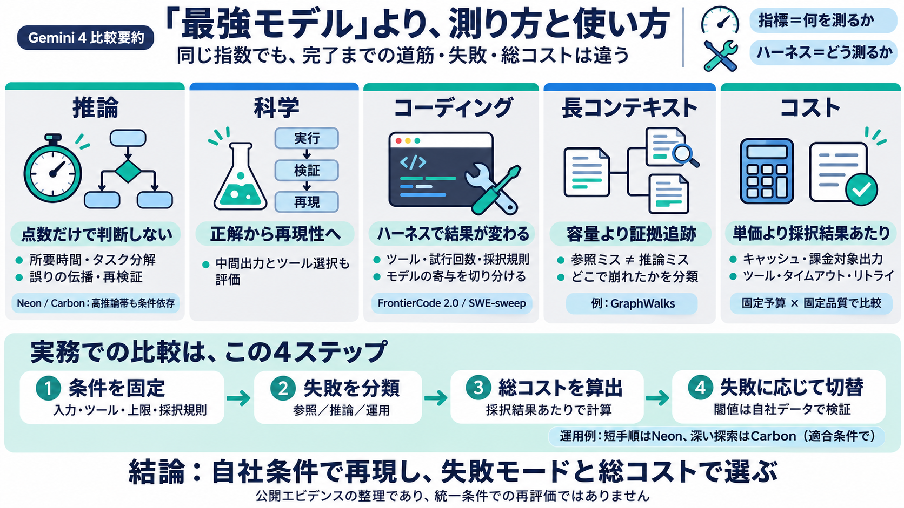

Gemini 4 Carbon - Model Card — Google DeepMind
| Category | Benchmark | Notes | Gemini 4 Carbon | Gemini 4 Argon | GPT-6 Astra | Claude Opus 5.5 | Claude Fable 5.1 | …

同じ「万能AI」ではなく、評価指標と評価ハーネス次第で強みが分かれる——記事の要点を、推論・科学・コーディング・長コンテキスト・コストの軸で再構成します。
Intelligence Indexの「high/xhigh」を見て同レベルだと判断すると、タスク完了までの道筋や証拠追跡の失敗の仕方が見落ちます。
記事は「モデル性能」だけでなく、タスク条件・評価ハーネス・努力（推論計算量や試行回数）・ツール呼び出し・タイムアウト/リトライで結果が変わる前提を置きます。
推論指標が近く見えても、weighted time per task（タスク所要時間の見積り）や、証拠追跡の成否が実運用の差になります。
NeonとCarbonは「推論強度」では高い帯（Intelligence Indexでhigh帯）に見える一方、長コンテキスト追跡や完了までの道筋で差が表れます。
科学的推論は「答えの正誤」だけでなく、実行→検証→再現可能なワークフローまで含めて評価されるべきだ、と記事は主張します。
コーディングエージェントはモデル単体より、FrontierCode 2.0やSWE-sweepのようなハーネス（ツール群/サブエージェント/採択基準）の影響が大きいです。
同じタスクで条件を対にして比較しない限り、ハーネス差がモデル差に見えてしまいます。自社ではツール版/タイムアウト/リトライ/採択規則/入力準備を固定するのが現実的です。
長コンテキストは容量（トークン上限）だけでなく、証拠追跡の精度と「どこで失敗したか」を見なければ判断できません。
GraphWalksのように、誤りが「証拠参照のミス」なのか「参照後の推論ミス」なのかを分けて測る設計が有効だと記事は述べています。
コスト比較はAPI単価だけで不十分です。キャッシュヒット、課金対象出力、ツール/リトライ回数などで「採択結果あたりのコスト」は変動します。
失敗モードに応じてモデルを切り替える（例：短い手順はNeon、深い探索はCarbon等）運用が現実的だ、という結論につながります。
記事の価値は「どれが一番」より、自社で再現可能な条件を揃え、失敗モードを観測して意思決定に落とす設計思想にあります。
Gemini 4の差は「モデル名」ではなく、測り方（指標）と測られ方（ハーネス）で見え方が変わります。自社条件で再現実験し、失敗モードと総コストで意思決定しましょう。
| Category | Benchmark | Notes | Gemini 4 Carbon | Gemini 4 Argon | GPT-6 Astra | Claude Opus 5.5 | Claude Fable 5.1 | …
Argon introduces an industry-leading output ceiling of 1,000,000 tokens, a state-of-the-art score of 77.9% on DeepSWE v1…
➤ Lower Cost per Task than Claude Opus 5.5 for comparable overall intelligence: With standard pricing, Gemini 4 Carbon c…
Gemini 4 Argon was released by Google on Wednesday, Sep 30 2026. Gemini 4 Argon was built by Google. Builds the Gemini …
Update: Gemini 4 Argon is out Google announced Gemini 4 Argon on 30 September 2026: $2 in / $10 out, a 1M output token l…